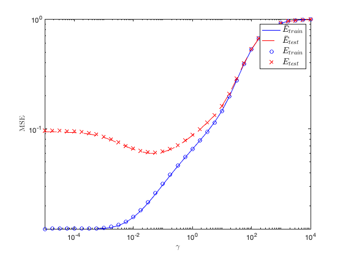
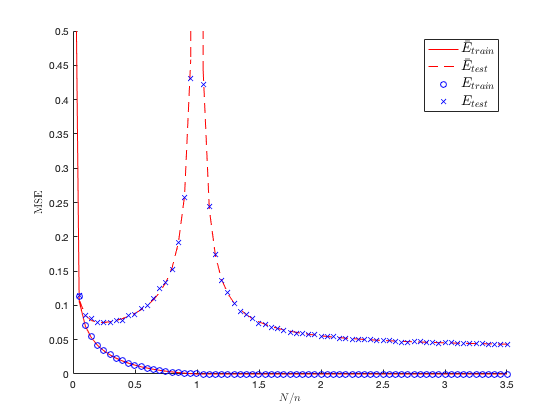

Section 5.1.1: Regression with random neural networks
This page contains simulations in Section 5.1.1.
Contents
Training and test performance of random weights neural networks
close all; clear; clc testcase='fashion'; sigma_fun = 'ReLU'; % among 'ReLU', 'sign', 'posit', 'erf', 'poly2', 'cos','sin','abs', 'exp' n = 1024; n_test = 512; N = 512; cs = [1/2 1/2]; k = length(cs); switch testcase case 'MNIST' selected_labels=[7 9]; % mean [0 1], [5 6] init_data = loadMNISTImages('../../datasets/MNIST/train-images-idx3-ubyte'); init_labels = loadMNISTLabels('../../datasets/MNIST/train-labels-idx1-ubyte'); case 'fashion' selected_labels=[1 2]; init_data = loadMNISTImages('../../datasets/fashion-MNIST/train-images-idx3-ubyte'); init_labels = loadMNISTLabels('../../datasets/fashion-MNIST/train-labels-idx1-ubyte'); case 'Kuzushiji' selected_labels=[3 4]; init_data = loadMNISTImages('../../datasets/Kuzushiji-MNIST/train-images-idx3-ubyte'); init_labels = loadMNISTLabels('../../datasets/Kuzushiji-MNIST/train-labels-idx1-ubyte'); case 'kannada' selected_labels=[4 8]; init_data = loadMNISTImages('../../datasets/kannada-MNIST/train-images-idx3-ubyte'); init_labels = loadMNISTLabels('../../datasets/kannada-MNIST/train-labels-idx1-ubyte'); end [labels,idx_init_labels]=sort(init_labels,'ascend'); images=init_data(:,idx_init_labels); init_n=length(images(1,:)); p=length(images(:,1)); mean_images=mean(images,2); norm2_images=0; for i=1:init_n norm2_images=norm2_images+1/init_n*norm(images(:,i)-mean_images)^2; end images=(images-mean_images*ones(1,size(images,2)))/sqrt(norm2_images)*sqrt(p); selected_images=[]; MNIST = cell(length(selected_labels),1); j=1; for i=selected_labels selected_images=[selected_images images(:,labels==i)]; MNIST{j}=images(:,labels==i); j=j+1; end mean_selected_images=mean(selected_images,2); norm2_selected_images=mean(sum(abs(selected_images-mean_selected_images*ones(1,length(selected_images))).^2)); for j=1:length(selected_labels) MNIST{j}=(MNIST{j}-mean_selected_images*ones(1,size(MNIST{j},2)))/sqrt(norm2_selected_images)*sqrt(p); end X=zeros(p,n); X_test=zeros(p,n_test); y=zeros(n,1); y_test=zeros(n_test,1); for i=1:k % random data picking data = MNIST{i}(:,randperm(size(MNIST{i},2))); X(:,sum(cs(1:(i-1)))*n+1:sum(cs(1:i))*n)=data(:,1:n*cs(i)); X_test(:,sum(cs(1:(i-1)))*n_test+1:sum(cs(1:i))*n_test)=data(:,n+1:n+n_test*cs(i)); y(sum(cs(1:(i-1)))*n+1:sum(cs(1:i))*n) = (-1)^i*ones(cs(i)*n,1); y_test(sum(cs(1:(i-1)))*n_test+1:sum(cs(1:i))*n_test) = (-1)^i*ones(cs(i)*n_test,1); end X = X/sqrt(p); X_test = X_test/sqrt(p); switch sigma_fun case 't' sig = @(t) t; K_xy = @(x,y) x'*y; case 'poly2' poly2A = -1/2; poly2B = 0; poly2C = 1; m4 = 3; m3 = 0; m2 = 1; sig = @(t) poly2A*t.^2+poly2B*t+poly2C; K_xy = @(x,y) poly2A^2*(m2^2*(2*(x'*y).^2+(x.^2)'*ones(size(x,1))*(y.^2))+(m4-3*m2^2)*(x.^2)'*(y.^2))+poly2B^2*(m2*(x'*y))+poly2A*poly2B*m3*((x.^2)'*y+x'*(y.^2))+poly2A*poly2C*m2*(diag(x'*x)*ones(1,size(y,2))+ones(size(x,2),1)*diag(y'*y)')+poly2C^2; case 'ReLU' sig = @(t) max(t,0); angle_xy = @(x,y) diag(1./sqrt(diag(x'*x)))*(x'*y)*diag(1./sqrt(diag(y'*y))); K_xy = @(x,y) sqrt(diag(x'*x))*sqrt(diag(y'*y))'/(2*pi).*(angle_xy(x,y).*acos(-angle_xy(x,y))+sqrt(1-angle_xy(x,y).^2)); case 'sign' sig = @(t) sign(t); K_xy = @(x,y) 2/pi*asin(diag(1./sqrt(diag(x'*x)))*(x'*y)*diag(1./sqrt(diag(y'*y)))); case 'posit' sig = @(t) (sign(t)+1)/2; K_xy = @(x,y) 1/2-1/(2*pi)*acos(diag(1./sqrt(diag(x'*x)))*(x'*y)*diag(1./sqrt(diag(y'*y)))); case 'erf' sig = @(t) erf(t); K_xy = @(x,y) 2/pi*asin(diag(1./sqrt(1+2*diag(x'*x)))*(2*x'*y)*diag(1./sqrt(1+2*diag(y'*y)))); case 'cos' sig = @(t) cos(t); K_xy = @(x,y) diag(exp(-diag(x'*x/2)))*cosh(x'*y)*diag(exp(-diag(y'*y/2)')); case 'sin' sig = @(t) sin(t); K_xy = @(x,y) diag(exp(-diag(x'*x/2)))*sinh(x'*y)*diag(exp(-diag(y'*y/2)')); case 'abs' sig = @(t) abs(t); angle_xy = @(x,y) diag(1./sqrt(diag(x'*x)))*(x'*y)*diag(1./sqrt(diag(y'*y))); K_xy = @(x,y) 2*sqrt(diag(x'*x))*sqrt(diag(y'*y))'/pi.*(angle_xy(x,y).*(acos(-angle_xy(x,y))-pi/2)+sqrt(1-angle_xy(x,y).^2)); case 'exp' sig = @(t) exp(-t.^2/2); K_xy = @(x,y) 1./sqrt( 1 + (x.^2)'*ones(size(x,1))*(y.^2) + diag(x'*x)*ones(1,size(y,2))+ones(size(x,2),1)*diag(y'*y)' - (x'*y).^2); end K_X = real(K_xy(X,X)); [U_K_X,L_K_X]=svd(K_X); U_K_X = real(U_K_X); eig_K_X = diag(L_K_X); Up_K_X = U_K_X'*K_X; U_K_y = U_K_X'*y; K_XXtest = real(K_xy(X,X_test)); U_K_XXtest = U_K_X'*K_XXtest; D_U_K_XXtest_2 = diag(U_K_XXtest*U_K_XXtest'); K_Xtest = K_xy(X_test,X_test); D_K_Xtest = real(diag(K_Xtest)); gammas=10.^(-5:.25:4); bar_E_train = zeros(length(gammas),1); bar_E_test = zeros(length(gammas),1); iter_gamma=1; delta = 0; for gamma=gammas delta_tmp=1; while abs(delta-delta_tmp)>1e-6 delta_tmp=delta; delta = 1/n*sum(eig_K_X./(N/n*eig_K_X/(1+delta)+gamma)); end eig_bar_K = eig_K_X*(N/n/(1+delta)); eig_bar_Q = 1./(eig_bar_K+gamma); bar_E_train(iter_gamma) = gamma^2*sum(abs(U_K_y).^2.*eig_bar_Q.^2.*(1/N*sum(eig_bar_K.*eig_bar_Q.^2)/(1-1/N*sum(eig_bar_K.^2.*eig_bar_Q.^2))*eig_bar_K+1))/n; bar_E_test(iter_gamma) = 1/n_test*sum( (y_test - (N/n/(1+delta))*U_K_XXtest'*(eig_bar_Q.*U_K_y)).^2 ) + 1/N*sum(abs(U_K_y).^2.*(eig_bar_Q.^2.*eig_bar_K))/(1-1/N*sum(eig_bar_K.^2.*eig_bar_Q.^2))*(1/n_test*(N/n/(1+delta))*sum(D_K_Xtest)-gamma/n_test*sum(eig_bar_Q.^2.*( (N/n/(1+delta))^2*D_U_K_XXtest_2 ))-1/n_test*sum(eig_bar_Q.*( (N/n/(1+delta))^2*D_U_K_XXtest_2 ))); iter_gamma=iter_gamma+1; end loops=30; E_train = zeros(length(gammas),loops); E_test = zeros(length(gammas),loops); for loop=1:loops W = randn(N,p); Sigma = sig(W*X); Sigma_test = sig(W*X_test); iter_gamma=1; for gamma=gammas inv_tQ_r = (Sigma'*Sigma/n+gamma*eye(n))\y; beta = Sigma/n*inv_tQ_r; E_train(iter_gamma,loop)=norm(y-Sigma'*beta)^2/n; E_test(iter_gamma,loop)=norm(y_test-Sigma_test'*beta)^2/n_test; iter_gamma=iter_gamma+1; end end figure; loglog(gammas,bar_E_train,'b'); hold on; loglog(gammas,bar_E_test,'r--'); loglog(gammas,mean(E_train,2),'ob'); loglog(gammas,mean(E_test,2),'xr'); legend('$\bar E_{train}$', '$\bar E_{test}$', '$E_{train}$', '$E_{test}$', 'Interpreter', 'latex', 'FontSize', 14) xlabel('$\gamma$', 'Interpreter', 'latex') ylabel('MSE', 'Interpreter', 'latex') axis( [min(gammas), max(gammas), min(mean(E_train,2)), 1] )
Double descent test curve
Empirical versus theoretical training and test error as a function of N/n
Ns = floor(n*(0:0.05:3.5)); gamma = 1e-7; bar_E_train = zeros(length(Ns),1); bar_E_test = zeros(length(Ns),1); loops=30; E_train = zeros(length(Ns),loops); E_test = zeros(length(Ns),loops); iter_N=1; for N=Ns delta = 0;delta_tmp=1; % theoretical while abs(delta-delta_tmp)>1e-6 delta_tmp=delta; delta = 1/n*sum(eig_K_X./(N/n*eig_K_X/(1+delta)+gamma)); end eig_bar_K = eig_K_X*(N/n/(1+delta)); eig_bar_Q = 1./(eig_bar_K+gamma); if N==0 bar_E_train(iter_N) = 1; bar_E_test(iter_N) = 1; else bar_E_train(iter_N) = gamma^2*sum(abs(U_K_y).^2.*eig_bar_Q.^2.*(1/N*sum(eig_bar_K.*eig_bar_Q.^2)/(1-1/N*sum(eig_bar_K.^2.*eig_bar_Q.^2))*eig_bar_K+1))/n; end bar_E_test(iter_N) = 1/n_test*sum( (y_test - (N/n/(1+delta))*U_K_XXtest'*(eig_bar_Q.*U_K_y)).^2 ) + 1/N*sum(abs(U_K_y).^2.*(eig_bar_Q.^2.*eig_bar_K))/(1-1/N*sum(eig_bar_K.^2.*eig_bar_Q.^2))*(1/n_test*(N/n/(1+delta))*sum(D_K_Xtest)-gamma/n_test*sum(eig_bar_Q.^2.*( (N/n/(1+delta))^2*D_U_K_XXtest_2 ))-1/n_test*sum(eig_bar_Q.*( (N/n/(1+delta))^2*D_U_K_XXtest_2 ))); for loop=1:loops % empirical W = randn(N,p); Sigma = sig(W*X); Sigma_test = sig(W*X_test); inv_tQ_r = (Sigma'*Sigma/n+gamma*eye(n))\y; beta = Sigma/n*inv_tQ_r; E_train(iter_N,loop)=norm(y-Sigma'*beta)^2/n; E_test(iter_N,loop)=norm(y_test-Sigma_test'*beta)^2/n_test; end iter_N=iter_N+1; end figure hold on plot(Ns/n,bar_E_train,'r') plot(Ns/n,bar_E_test,'--r') plot(Ns/n,mean(E_train,2),'ob') plot(Ns/n,mean(E_test,2),'xb') xlabel('$N/n$', 'Interpreter', 'latex') ylabel('MSE', 'Interpreter', 'latex') legend('$\bar E_{train}$', '$\bar E_{test}$', '$E_{train}$', '$E_{test}$', 'Interpreter', 'latex', 'FontSize', 14) axis( [ min(Ns/n), max(Ns/n), 0, .5] )